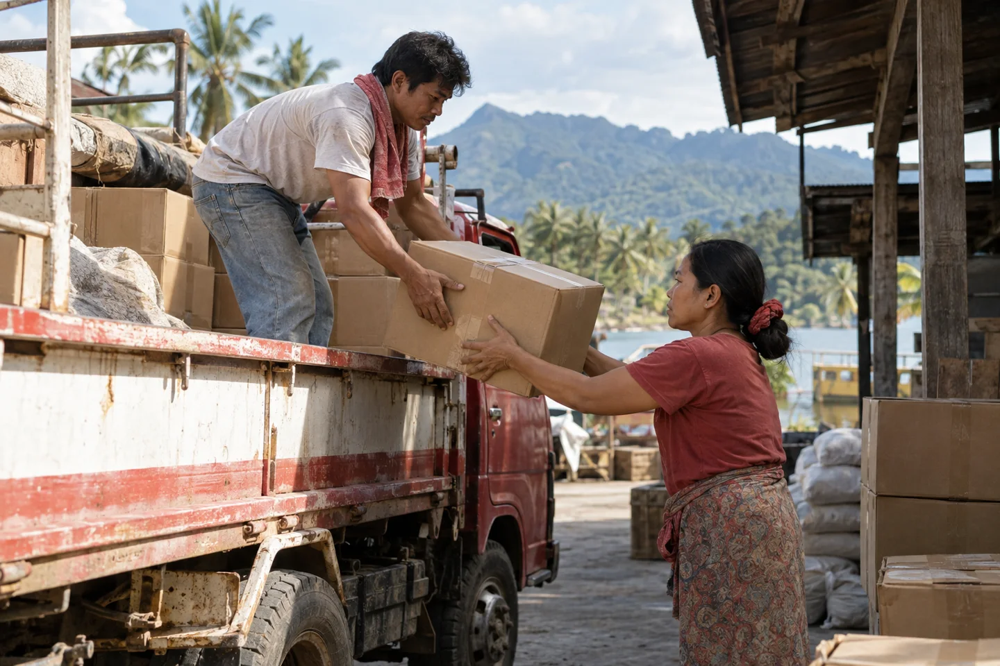
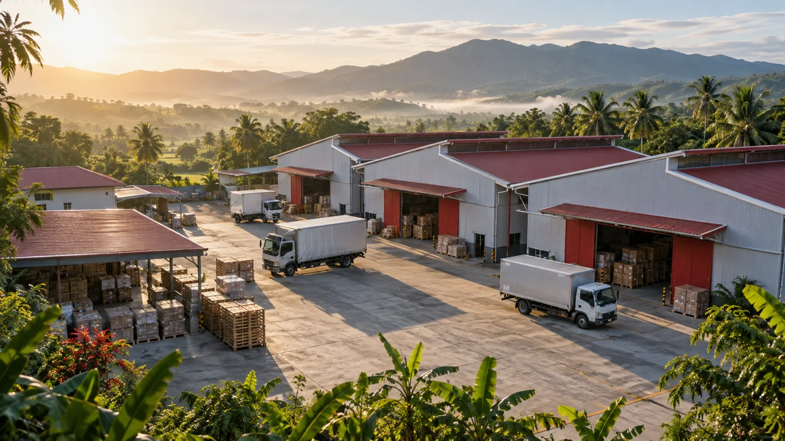
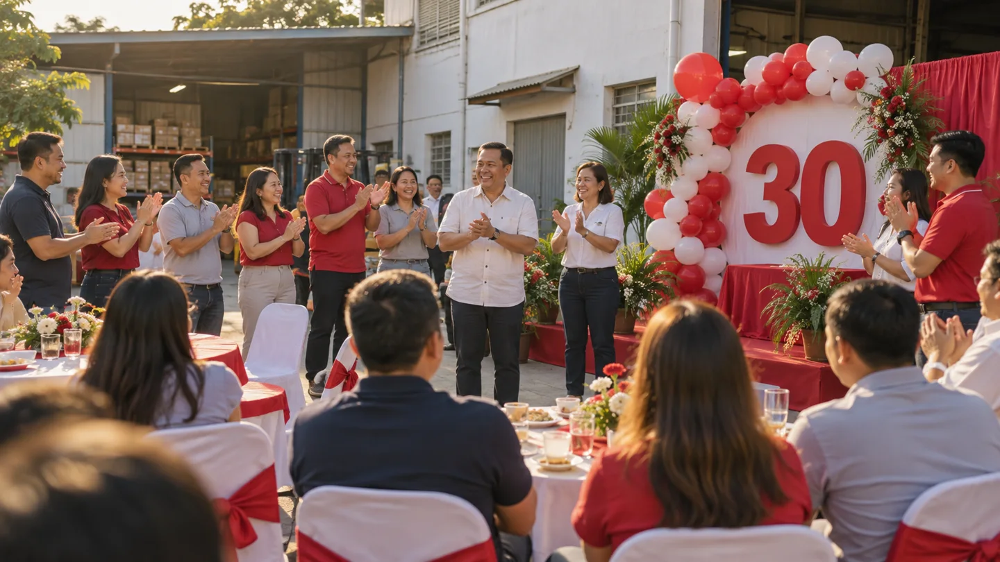

Three decades in motion.
Explore the photo galleryThirty years is a story of people.
Jakkar’s anniversary brings together its beginnings in Davao, the work behind its four sites, and the people and partnerships along the way.

30 years.Still moving forward.
1996–2026
“Thank you for being part of the work and the journey.”
“Here’s to the conversations and connections that keep us moving.”
“Thirty years, shared by the people behind every next step.”
-
1996
A beginning in Davao
A Davao beginning in September 1996, followed by the everyday work and people behind the company’s story.
Jakkar began in Davao in September 1996. Its anniversary looks back to the people who took the first steps and the everyday work that followed.
-
Early years
The work takes shape
Orders, conversations and deliveries bring distribution and trucking into focus, along with the people doing the work.

Orders, conversations and deliveries connect this chapter. It is a look at the practical work behind distribution and trucking, and the people making it happen.
-
Growing together
Four sites, one company
Davao, General Santos, Kidapawan and Tagum are Jakkar’s four sites today, each part of one company story.

Davao, General Santos, Kidapawan and Tagum form Jakkar’s presence today. The story grows through different places and the people who work in them.
-
Today
People behind the next move
Product enquiries, cargo coordination and teamwork connect the people behind Jakkar’s day-to-day work across its four sites.
From product enquiries to cargo coordination, people carry the work forward. This chapter brings the company’s day-to-day conversations, preparation and teamwork into focus.
-
Thirty years
Thirty years together
September 2026 marked thirty years, shared with the teams, customers and partners who have been part of the journey.

September 2026 marked thirty years of Jakkar. To the teams, customers and partners who have shared the journey: thank you. Still moving forward.